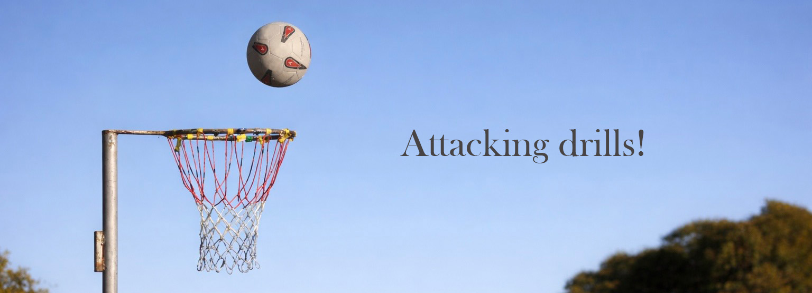
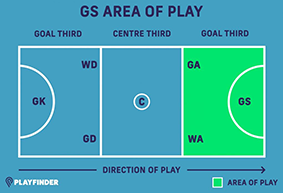
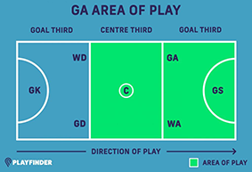

The Goal Shot is the main shooter in the team and is only allowed inside the shooting third. Their role is to receive passes and shot the goals. They have to position strongly, keep their balence and be accerate with their shotting.

How to do this drill
This drill is really good for GS because it teaches them how to make space, how to move around the circle and get away from the defender. These are such an important skill for goal shooters.
The Goal attack has many roles on court. They can shoot goals and also go in the center third to help get the ball to the shooting circle. The goal attack works mostly with the wing attack and goal stooter.

How to do this drill
This drill is really good for GA because it teaches them timing and how to create space and how to change direction to lose their defender. These are really important skills for GA to know